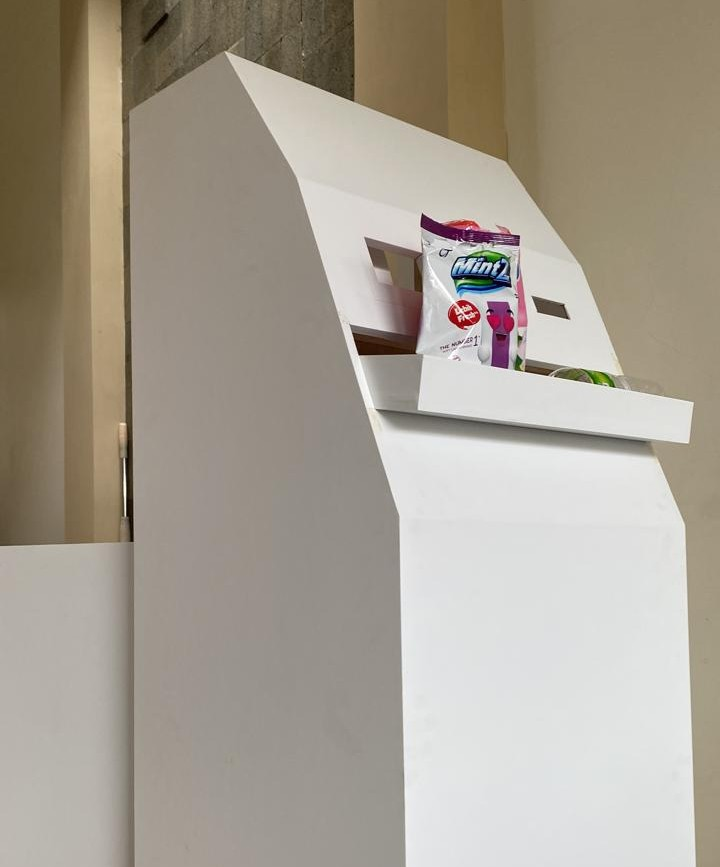

SETOL (Setor Botol) | IFusioN
Berupa sebuah alat pembuangan sampah untuk
botol plastik yang dibuat seperti sistem vending
machine. Alat tersebut dilengkapi sensor yang
akan menyeleksi jenis sampah botol plastik,
dimana pada saat para pengguna membuang
sampah berupa botol plastik, mereka akan
mendapatkan sebuah reward.
Kembali